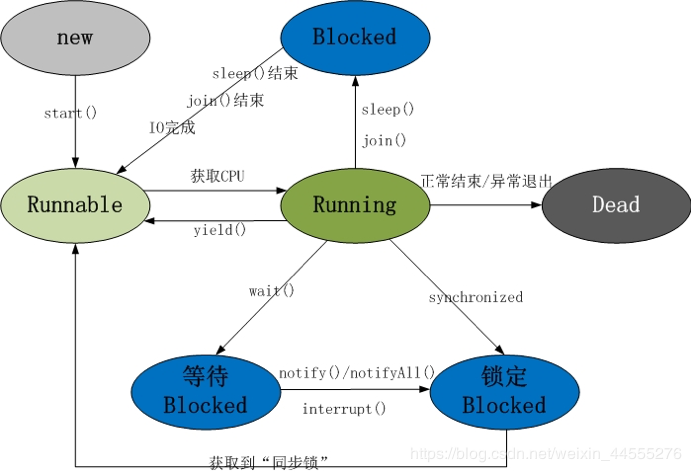
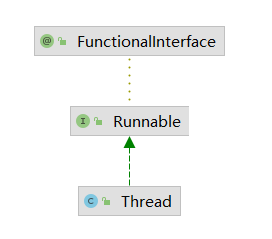

线程的生命周期？线程有几种状态
线程通常有五种状态：创建、就绪、运行、阻塞、死亡。
- 新建状态（New）：新建了一个线程对象。
- 就绪状态（Runnable）：线程对象创建后，其他线程调用了该对象的start方法。该状态的线程位于可运行的线程池中，变得可运行，等待获取CPU的使用权。
- 运行状态（Running）：就绪状态的线程获取了CPU，执行程序代码。
- 阻塞状态（Blocked）：阻塞状态是线程因为某种原因放弃CPU使用全，暂时停止运行，直到线程进入就绪状态，才有机会转到运行状态。
- 死亡状态（Dead）：线程执行完或者因为异常退出了run方法，该线程结束生命周期。

阻塞又分为了三种：
- 等待阻塞：运行的线程执行了wait方法，线程会释放占用的所有资源，JVM会把线程放入线程等待池中。进入这个状态后，线程不能自动唤醒，必须依靠其他线程调用notify或者notifyAll方法才能被唤醒。wait是object类的方法。
- 同步阻塞：运行的线程在获取对象的同步锁时，若同步锁被别的线程占用，则JVM会把该线程放入”锁池”中。
- 其他阻塞：运行的线程执行sleep或join方法，或者发出了I/O请求时，JVM会把线程置为阻塞状态。当sleep状态超时、join等待线程终止或超时、或者I/O处理完毕，线程会重新转入就绪状态。
锁池
所有需要竞争同步锁的线程都会放在锁池中，比如当前对象的锁已经被其中一个线程得到，则其他线程需要在这个锁池进行等待，当前面的线程释放同步锁后锁池中的线程去竞争同步锁，当某个线程得到后进入就绪队列进行等待CPU资源分配。
等待池
我们调用wait()方法后，线程会放在等待池中，等待池的线程是不会去竞争同步锁，只有调用了notify()或者notifyAll()后等待池的线程才会去开始竞争锁。
- notify()是随机从等待池中选出一个线程放入锁池中
- notifyAll()是将等待池中所有的线程放入锁池当中。
几个常见的方法区别
sleep和wait方法对比
- sleep是Thread类的静态本地方法，wait是Object类的本地方法。
- sleep方法不会释放锁，但是wait会释放，而且会加入到等待池中。
- sleep方法不依赖于同步器Synchronized，而wait需要依赖。
- sleep不需要被唤醒（休眠之后会退出阻塞），但是wait需要（不指定时间需要被其他线程中断）
- sleep一般用于当前线程休眠，或者轮询暂停操作，wait多用于多线程之间通信。
- sleep会让出CPU执行时间且强制上下文切换，而wait不一定，wait后可能还是有机会重新竞争到锁继续执行的。
yield()：执行后线程直接进入就绪状态，马上释放CPU的执行权，但是依然保留了cpu的执行资格，所以有可能cpu下次进行线程调度还会让这个线程获取到执行权继续执行。
join()：执行后线程进入阻塞状态，例如线程B中调用了线程A的join()，那线程B会进入到阻塞队列，直到线程A结束或中断线程。
看一个非常简单的例子：
1 | // 在main方法中定义一个线程，线程sleep 3秒钟，如果正常在main中start therad1线程，那最终的输出结果会是先输出主线程运行结束，而后子线程运行结束 |

并发、并行、串行
串行，在时间上不可能发生重叠，前一个任务没有搞定，下一个就只能等着。
并行，在时间上是重叠的，两个任务在同一时刻互补干扰的同时执行。
并发，允许两个任务彼此干扰。同一时间点，只有一个任务运行，交替执行。
并发的三大特性
- 原子性
- 可见性
- 有序性
这块内容，后续更新单独博客
Thread和Runnable区别
先看图

我们可以看到，Thread和Runnable是继承关系，两者并没有可比性，无论使用Runnable还是Thread，都会new Thread，然后执行run方法。在用法上，如果有复杂线程操作需要，就选择继承Thread，如果只是简单的执行一个任务，就选择实现Runnable。
有一个网上流传很广的买票的例子：
1 | public class Test { |
出现上述不同的输出结果并不是网上流传的，Runnable更容易实现资源共享什么的，和这个完全没有关系。
分析上面的代码
MyThread2 mt = new MyThread2();
new Thread(mt).start();
new Thread(mt).start();new MyThread().start();
new MyThread().start();
关键在这两句，MyThread2 中只new了一个，只不过是调用了两次start方法，最终只是一个线程在执行，自然就只有一份，5。MyThread中很明显是new了两次，创建了两个不同的实例，然后分别调用两个线程的start方法，两个线程具体各自的成员变量，所以会卖出两次。这个可以通过在输出语句中添加Thread.currentThread().getId()，输出当前执行线程的id就可以很清楚的看到两个不同线程的执行情况。
出现这样的问题属于用法错误。
Thread ticket = 5 == 线程id-12
Thread ticket = 5 == 线程id-11
Thread ticket = 4 == 线程id-12
Thread ticket = 4 == 线程id-11
Thread ticket = 3 == 线程id-12
Thread ticket = 3 == 线程id-11
Thread ticket = 2 == 线程id-12
Thread ticket = 1 == 线程id-12
Thread ticket = 0 == 线程id-12
Thread ticket = 2 == 线程id-11
Thread ticket = 1 == 线程id-11
Thread ticket = 0 == 线程id-11
对守护线程的理解
何为守护线程
为所有非守护线程提供服务的线程；任何一个守护线程都是整个JVM中所有非守护线程的保姆。
守护线程类似整个进程中的一个默默无闻的小喽啰；它的生死无关痛痒，但是它却依赖整个进程而运行；如果其他进程都结束了，没有待执行任务后，程序就结束了，不会去关注守护线程的状态。
正因为守护线程的这种特性，守护线程的终止自身无法控制，因此我们在使用的过程中千万不要把IO、file等重要的操作逻辑分配给它，因为它不靠谱的。
守护线程的作用
举例：GC垃圾回收线程，就是一个守护线程，当我们程序中不再有任何运行的线程，程序就不会再产生垃圾，垃圾回收器也就无事可做，所以当垃圾回收线程是JVM中仅存的线程时，垃圾回收线程会自动离开。它始终在低级别的状态中运行，用于实时监控和管理系统中的可回收资源。
应用场景
- 为其他线程提供服务支持的情况
- 任何情况下，程序结束时，这个线程必须正常且立即关闭，就可以作为守护线程来使用。反之，如果一个正在执行某个操作的线程必须要正确关闭否则会出现不好的后果的话，那这个线程就不能作为守护线程，而是用户线程。通常的关键的事务，比如数据库录入、更新等这些都是不能中断的。
使用
设置线程为守护线程使用
thread.setDaemon(true)
这个操作必须在线程的start()之前，否则会抛出异常java.lang.IllegalThreadStateException。因为我们不能把一个正在运行的线程设置为守护线程。
注意：在Daemon中产生的新线程也是Daemon的。
守护线程不能用于访问固定资源，比如读写操作或者计算逻辑。因为它会在任何时候甚至在一个操作中间发生中断。
java自带的多线程框架，比如ExecutorService，会将守护线程转换为用户线程，所以如果要使用后台线程就不能用java的线程池。
Thread.currentThread().isDaemon()，查看当前线程是否为守护线程

...
...
Copyright 2021 sunfy.top ALL Rights Reserved